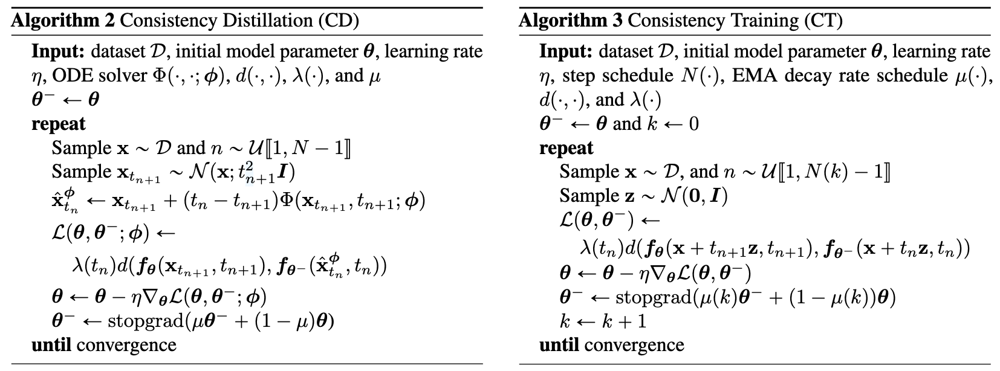
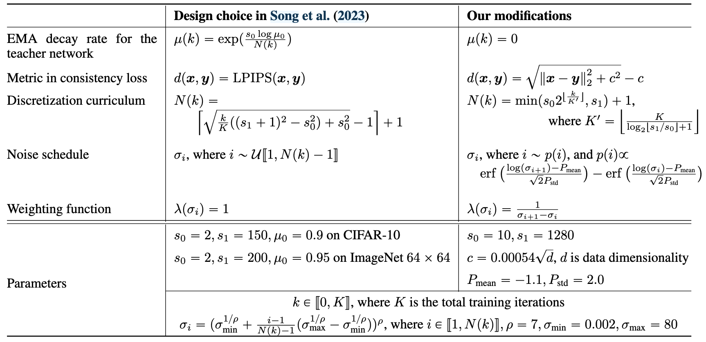
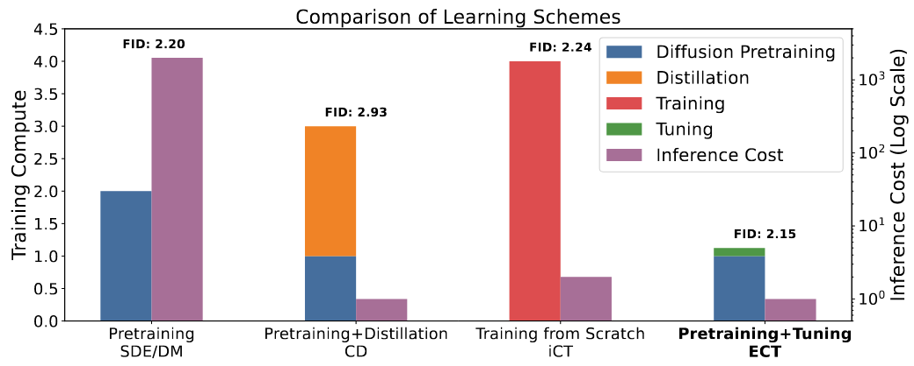
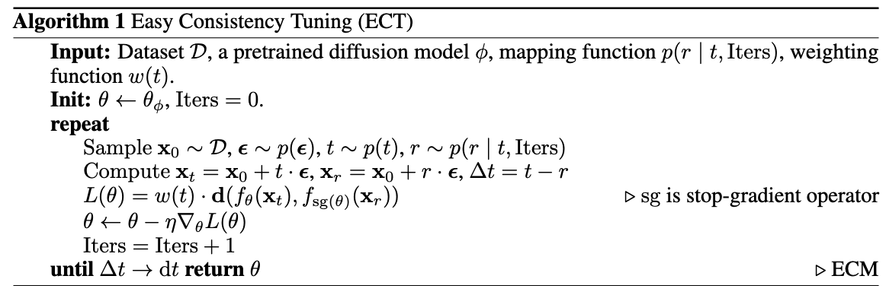
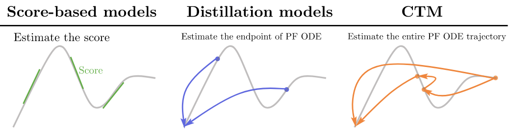

Consistency Models
本文介绍 Consistency Models 及其后续扩展，包括：
- CM: Consistency Models
- iCT: Improved Techniques for Training Consistency Models
- ECT: Consistency Models Made Easy
- CTM: Consistency Trajectory Models
- sCM: Simplifying, Stabilizing and Scaling Continuous-Time Consistency Models
Consistency Models (CM)
扩散模型的生成质量虽然很好，但迭代式的生成过程效率太低。为了解决这个问题，宋飏等人在 Probability Flow ODE 的基础上建立了 Consistency Models，通过将一条 ODE 轨迹上的任何点（如 \(\mathbf x_t,\mathbf x_{t'},\mathbf x_T\)）都映射到该轨迹的端点 \(\mathbf x_0\)，实现从 \(\mathbf x_T\) 到 \(\mathbf x_0\) 的一步生成，如下图所示：

Probability Flow ODE
Probability Flow ODE (PF ODE) 的一般形式为： \[ \mathrm d\mathbf x_t=\left[\boldsymbol\mu(\mathbf x_t,t)-\frac{1}{2}\sigma^2(t)\nabla\log p_t(\mathbf x_t)\right]\mathrm dt \] 文章采用 EDM 的设置 \(\boldsymbol\mu(\mathbf x_t,t)\equiv \mathbf 0,\,\sigma(t)=\sqrt{2t}\)，那么有： \[ \mathrm d\mathbf x_t=-t\nabla\log p_t(\mathbf x_t)\mathrm dt \] 设扩散模型训练得到的 score model 为 \(s_\phi(\mathbf x_t,t)\approx\nabla\log p_t(\mathbf x_t)\)，代入上式得到 empirical PF ODE: \[ \mathrm d\mathbf x_t=-ts_\phi(\mathbf x_t,t)\mathrm dt \] 则从 \(T\) 到 \(\epsilon>0\) 迭代求解该 ODE 的过程就是生成过程。其中 \(\epsilon\) 不取 0 是为了避免 score function 在 \(t=0\) 处的数值不稳定问题。
Consistency Models
设 PF ODE 的轨迹为 \(\{\mathbf x_t\}_{t\in[\epsilon,T]}\)，定义 Consistency Function 为 \(\mathbf f:\mathcal D\times[\epsilon,T]\to\mathcal D\)，满足： \[ \mathbf f(\mathbf x_t,t)=\mathbf x_\epsilon,\quad\forall t\in[\epsilon,T] \] Consistency Function 满足两个性质：
- 自一致性：对同一个 ODE 轨迹上的任意两点 \(\mathbf x_t,\mathbf x_{t'}\)，有 \(\mathbf f(\mathbf x_t,t)=\mathbf f(\mathbf x_{t'},t')\).
- 边界条件：\(\mathbf f(\mathbf x_\epsilon,\epsilon)=\mathbf x_\epsilon\).
我们的目标是学习一个模型 \(\mathbf f_\theta\) 去拟合 \(\mathbf f\). 为了让模型满足边界条件，作者将模型参数化为了如下形式： \[ \mathbf f_\theta(\mathbf x,t)=c_\text{skip}(t)\mathbf x+c_\text{out}(t)F_\theta(\mathbf x_t,t) \] 其中可微系数 \(c_\text{skip}(t),c_\text{out}(t)\) 满足 \(c_\text{skip}(\epsilon)=1,\,c_\text{out}(\epsilon)=0\)，从而使得 \(\mathbf f_\theta(\mathbf x_\epsilon,\epsilon)=\mathbf x_\epsilon\). 这个拟合 Consistency Function 的模型就被称作 Consistency Model.
根据 Consistency Function 的定义，假若成功训练出了模型 \(\mathbf f_\theta\)，我们可以轻松实现一步或多步生成。具体而言，一步生成时，只需先采样 \(\hat{\mathbf x}_T\sim\mathcal N(\mathbf 0,T^2\mathbf I)\)，然后计算 \(\hat{\mathbf x}_\epsilon=\mathbf f_\theta(\hat{\mathbf x}_T,T)\) 即可；多步生成时，确定时间步 \(\tau_1>\tau_2>\cdots>\tau_{N-1}\)，反复执行一步生成与注入噪声即可。算法流程如下图所示：

接下来介绍两种训练 CM 的方式，蒸馏预训练的扩散模型或直接从头训练。
Consistency Distillation
由于我们的模型参数化保证了边界条件恒成立，因此我们只需要训练模型使其满足自一致性即可。为此，首先确定 \(N\) 个离散时间步 \(\{t_1,t_2,\ldots,t_N\}\)，采样 \(\mathbf x\sim p_\text{data}\)，加噪得到 \(\mathbf x_{t_{n+1}}\)，然后使用预训练的 score model 去噪计算 \(\hat{\mathbf x}_{t_n}^\phi\)： \[ \hat{\mathbf x}_{t_n}^{\phi}=\mathbf x_{t_{n+1}}+(t_n-t_{n+1})\Phi(\mathbf x_{t_{n+1}},t_{n+1};\phi) \] 其中 \(\Phi(\cdot,\cdot,\phi)\) 表示 ODE solver 的一步更新。例如，若使用 Euler solver，那么有： \[ \hat{\mathbf x}_{t_n}^{\phi}=\mathbf x_{t_{n+1}}-(t_n-t_{n+1})t_{n+1}s_\phi(\mathbf x_{t_{n+1}},t_{n+1}) \] 这样，我们就得到了数据对 \((\hat{\mathbf x}_{t_n}^{\phi},\mathbf x_{t_{n+1}})\). 根据自一致性，\(\mathbf f_\theta\) 分别作用在它们之上后应该得到相等的结果，因此定义损失函数如下： \[ \mathcal L_\text{CD}^N(\theta,\theta^-;\phi)=\mathbb E\left[\lambda(t_n)d\left(\mathbf f_\theta(\mathbf x_{t_{n+1}},t_{n+1}),\mathbf f_{\theta^-}(\hat{\mathbf x}_{t_n}^\phi,t_n)\right)\right] \] 其中 \(d(\cdot,\cdot)\) 可以是 L2 距离、L1 距离或 LPIPS. 参数 \(\theta\) 用梯度下降优化，而 \(\theta^-\) 则是通过 EMA 更新，即： \[ \theta^-\gets\text{stopgrad}(\mu\theta^-+(1-\mu)\theta) \] 采用 EMA 更新相比简单地设置 \(\theta^-=\theta\) 有助于稳定训练过程，提升模型性能。值得注意的是，由于模型满足边界条件 \(\mathbf f_\theta(\mathbf x,\epsilon)=\mathbf x\)，因此不会坍缩到平凡解 \(\mathbf f_\theta(\mathbf x,t)\equiv \mathbf 0\).
Consistency Training
在 Consistency Distillation 中，我们用到了预训练的扩散模型 \(s_\phi(\mathbf x,t)\). 但事实上，我们知道： \[ s_\phi(\mathbf x,t)\approx\nabla\log p_t(\mathbf x_t)=-\mathbb E\left[\frac{\mathbf x_t-\mathbf x}{t^2}\Bigg\vert\mathbf x_t\right],\quad \mathbf x\sim p_\text{data},\,\mathbf x_t\sim\mathcal N(\mathbf x;\mathbf0,t^2\mathbf I) \] 因此，\(-(\mathbf x_t-\mathbf x)/t^2\) 可以作为 \(\nabla\log p_t(\mathbf x_t)\) 的无偏估计。用该无偏估计代替预训练模型，这样就可以不依赖预训练扩散模型、直接从头训练 Consistency Models 了。
具体而言，采样 \(\mathbf x\sim p_\text{data},\,\mathbf z\sim\mathcal N(\mathbf0,\mathbf I)\)，计算 \(\mathbf x_{t_{n+1}}=\mathbf x+t_{n+1}\mathbf z\)，将这次采样视作对上述期望的估计，有： \[ \nabla\log p_{t_{n+1}}(\mathbf x_{})\approx -\frac{\mathbf z}{t_{n+1}} \] 所以一步 Euler 去噪后的样本为： \[ \begin{align} \hat{\mathbf x}_{t_n}&=\mathbf x_{t_{n+1}}-(t_n-t_{n+1})t_{n+1}\cdot\left(-\frac{\mathbf z}{t_{n+1}}\right)\\ &=\mathbf x_{t_{n+1}}+(t_n-t_{n+1})\mathbf z\\ &=\mathbf x+t_{n+1}\mathbf z+(t_n-t_{n+1})\mathbf z\\ &=\mathbf x_t+t_n\mathbf z \end{align} \] 代入 \(\mathcal L_\text{CD}^N\)，得到损失函数如下： \[ \mathcal L_\text{CT}^N(\theta,\theta^-)=\mathbb E\left[\lambda(t_n)d\left(\mathbf f_\theta(\mathbf x+t_{n+1}\mathbf z,t_{n+1}),\mathbf f_{\theta^-}(\mathbf x+t_n\mathbf z,t_n)\right)\right],\quad\mathbf z\sim \mathcal N(\mathbf0,\mathbf I) \] 直观上，这相当于用同一个噪声 \(\mathbf z\) 对数据 \(\mathbf x\) 加噪两次，让分别预测的轨迹端点接近。作者提出随训练过程逐渐增大离散化步数 \(N\)，并同步调整 EMA 的 decay 参数 \(\mu\)，以获得最好的性能。两种训练算法的流程如下图所示：

Improved Consistency Training
在后续工作 iCT 中，作者进一步提出了以下措施改进 Consistency Training:
- 改进损失权重，降低 noise embedding 的敏感度，以及使用 dropout.
- 不使用 EMA 模型作为 teacher.
- 用 Pseudo-Huber 距离代替 LPIPS 距离。
- 每过一段训练时间后加倍离散化步数。
- 使用 lognormal noise schedule.
这些改进可以总结为下表，详细的分析和实验请读者参阅论文，此不赘述：

ECT
Consistency Models 虽然具有不错的一步/少步采样性能，但其训练代价较高（在 CIFAR-10 上需要 8 卡训练一周）。为了让训练更轻松，Easy Consistency Tuning (ECT) 提出将预训练的扩散模型逐步微调为一个 Consistency Model，只需单卡微调 1 小时即可达到 Consistency Distillation 训练几百个 GPU hours 的效果，如下图所示：

Revisiting Consistency Training
首先，我们重新整理一下 Consistency Training 的推导思路。根据 Consistency Function 的定义 \(\mathbf f(\mathbf x_t,t)=\mathbf x_0\)，两边对 \(t\) 求导，得： \[ \frac{\mathrm d\mathbf f}{\mathrm dt}=\frac{\mathrm d}{\mathrm dt}\mathbf x_0=0 \] 结合边界条件，可以得到 Consistency Function 的等价定义： \[ \mathbf f(\mathbf x_t,t)=\mathbf x_0\iff \frac{\mathrm d\mathbf f}{\mathrm dt}=0,\,\mathbf f(\mathbf x_0,0)=\mathbf x_0 \] 称之为 consistency condition. 我们的目标即是训练一个模型 \(\mathbf f_\theta\) 使其满足上述约束。实践中，用有限差分近似求导： \[ 0=\frac{\mathrm d\mathbf f}{\mathrm dt}\approx\frac{\mathbf f_\theta(\mathbf x_t,t)-\mathbf f_\theta(\mathbf x_r,r)}{t-r} \] 其中 \(0\leq r<t\). 据此，构造损失函数： \[ \mathcal L(\theta)=\mathbb E_{\mathbf x_0,\boldsymbol\epsilon,t}[w(t,r)d(\mathbf f_\theta(\mathbf x_t,t),\mathbf f_{\text{sg}(\theta)}(\mathbf x_r,r))] \] 其中 \(d(\cdot,\cdot)\) 为某种度量函数，权重 \(w(t,r)=\frac{1}{t-r}\)，\(\mathbf x_t=\mathbf x_0+t\boldsymbol\epsilon,\,\mathbf x_r=\mathbf x_0+r\boldsymbol\epsilon\)，\(\text{sg}(\theta)\) 表示停止梯度传播。
作者指出，当 \(\Delta t=t-r\) 很小时，模型会因误差累积而收敛非常缓慢。因此，原始 CT 和 iCT 都采用了特别设计的复杂 schedule \(N(\cdot)\) 来逐步增大离散化步数（即逐步减小 \(\Delta t\)），以获得最佳性能。
Easy Consistency Tuning
对于任意的 \(t\)，若固定 \(r=0\) 且取 \(d(\cdot,\cdot)\) 为 L2 距离，则损失函数变为： \[ \mathcal L(\theta)=\mathbb E_{\mathbf x_0,\boldsymbol\epsilon,t}\left[w(t,0)\Vert\mathbf f_\theta(\mathbf x_t,t)-\mathbf f_{\text{sg}(\theta)}(\mathbf x_0,0)\Vert_2^2\right]=\mathbb E_{\mathbf x_0,\boldsymbol\epsilon,t}\left[w(t,0)\Vert\mathbf f_\theta(\mathbf x_t,t)-\mathbf x_0\Vert_2^2\right] \] 这正是扩散模型的训练目标。这说明，随着 \(\Delta t\to0\)，模型逐渐地从扩散模型平滑演变为 Consistency Models. 受此启发，ECT 提出从一个预训练扩散模型出发，将其逐渐微调为一个 Consistency Models，从而减小训练成本。
具体而言，我们在训练过程中依 \(r\sim p(r\vert t,\text{iters})\) 采样时间步 \(r\)，使其在训练开始时取 \(r=0\)（等价于扩散模型），结束时 \(r\to t\)（等价于 Consistency Models）. 作者的设计为： \[ \frac{r}{t}=1-\frac{1}{q^{\lfloor\text{iters}/d\rfloor}}\left(1+\frac{k}{1+e^{bt}}\right) \] 其中 \(k,b,d\) 均为超参数。至于度量函数，参考 iCT 采用的 Pseudo-Huber 距离： \[ L(\Delta)=\sqrt{\Vert\Delta\Vert_2^2+c^2}-c^2,\quad c>0 \] 考虑对 \(\Delta\) 求导，有： \[ \mathrm d L=\frac{1}{\sqrt{\Vert\Delta\Vert_2^2+c^2}}\mathrm d\left(\frac{1}{2}\Vert\Delta\Vert_2^2\right) \] 可知对优化目标而言，Pseudo-Huber 距离与 L2 距离的区别仅在于一个权重项。因此，我们可以仍然使用 L2 距离，但是设计权重为： \[ w(t)=\bar w(t)\cdot w(\Delta)=\bar w(t)\cdot\frac{1}{\sqrt{\Vert\Delta\Vert_2^2+c^2}} \] 该权重由人为设计的权重项 \(\bar w(t)\) 和自适应权重项 \(w(\Delta)\) 组成。当 \(\Delta\to0\) 时，自适应权重项 \(w(\Delta)\) 增大，可以避免梯度消失。综上所述，ECT 的训练算法流程如下图所示：

CTM
Consistency Model 学习的是一条 PF ODE 轨迹上任意点 \(\mathbf x_t\) 到该轨迹的终点 \(\mathbf x_0\) 的映射（下图中间），而 Consistency Trajectory Model (CTM) 则将其扩展为一条 PF ODE 轨迹上任意两个点 \(\mathbf x_t,\mathbf x_s\,(s\leq t)\) 之间的映射（下图右边）。

Consistency Trajectory
对于一条 PF ODE 的轨迹 \(\{\mathbf x_t\}_{t\in[0,1]}\)： \[ \frac{\mathrm d\mathbf x_t}{\mathrm dt}=-t\nabla\log p_t(\mathbf x_t)=\frac{\mathbf x_t-\mathbb E[\mathbf x\vert\mathbf x_t]}{t} \] 定义 \(G(\mathbf x_t,t,s)\) 为从 \(\mathbf x_t\) 出发，求解 PF ODE 至时间步 \(s\) 的解： \[ G(\mathbf x_t,t,s)=\mathbf x_t+\int_t^s\frac{\mathbf x_u-\mathbb E[\mathbf x\vert\mathbf x_u]}{u}\mathrm du \] 假若实施一步 Euler solver 近似求解，则有： \[ G^\text{Euler}(\mathbf x_t,t,s)=\mathbf x_t+(s-t)\frac{\mathbf x_t-\mathbb E[\mathbf x\vert\mathbf x_t]}{t}=\frac{s}{t}\mathbf x_t+\left(1-\frac{t}{s}\right)\mathbb E[\mathbf x\vert\mathbf x_t] \] 进一步分析表明 Heun solver 也会导致相同的形式，因此作者决定将 \(G\) 重新表达为： \[ G(\mathbf x_t,t,s)=\frac{s}{t}\mathbf x_t+\left(1-\frac{s}{t}\right)g(\mathbf x_t,t,s) \] 其中： \[ g(\mathbf x_t,t,s)=\mathbf x_t+\frac{t}{t-s}\int_t^s\frac{\mathbf x_u-\mathbb E[\mathbf x\vert\mathbf x_u]}{u}\mathrm du \] 据此，我们要学习的模型 \(G_\theta\) 由 \(g_\theta\) 重参数化为： \[ G_\theta(\mathbf x_t,t,s)=\frac{s}{t}\mathbf x_t+\left(1-\frac{s}{t}\right)g_\theta(\mathbf x_t,t,s) \] 该定义自动满足了初始条件 \(G_\theta(\mathbf x_t,t,t)=\mathbf x_t\). 值得注意的是，当 \(s\to t\) 时，有： \[ \lim_{s\to t}g(\mathbf x_t,t,s)=\mathbf x_t+t\lim_{s\to t}\frac{1}{t-s}\int_t^s\frac{\mathbf x_u-\mathbb E[\mathbf x\vert\mathbf x_u]}{u}\mathrm du=\mathbb E[\mathbf x\vert\mathbf x_t] \] 这说明 \(g\) 此时就是 "x-prediction" 扩散模型。
Distillation Loss
与 Consistency Model 类似，我们可以通过蒸馏的方式训练 CTM. 根据 \(G\) 的定义，对于任意 \(s\leq u\leq t\)，从 \(\mathbf x_t\) 映射到的 \(\mathbf x_s\) 应与从 \(\mathbf x_u\) 映射到的 \(\mathbf x_s\) 相同，其中 \(\mathbf x_u\) 是由 \(\mathbf x_t\) 沿 PF ODE 求解得到，即： \[ G_\theta(\mathbf x_t,t,s)\approx G_{\text{sg}(\theta)}(\texttt{Solver}(\mathbf x_t,t,u;\phi),u,s) \] 其中 \(\texttt{Solver}\) 表示任意一种 ODE Solver，\(\phi\) 表示预训练扩散模型。为了衡量二者的差异，作者将它们继续求解到 0 时刻对比干净数据的距离，即： \[ \begin{align} &\mathcal L_\text{CTM}(\theta;\phi)=\mathbb E_{t,s,u,\mathbf x_0,\mathbf x_t}\left[d\left(\mathbf x_\text{target}(\mathbf x_t,t,u,s),\mathbf x_\text{est}(\mathbf x_t,t,s)\right)\right]\\ \text{where}\quad&\mathbf x_\text{target}(\mathbf x_t,t,u,s)=G_{\text{sg}(\theta)}\big(G_{\text{sg}(\theta)}(\texttt{Solver}(\mathbf x_t,t,u;\phi),u,s),s,0\big)\\ &\mathbf x_\text{est}(\mathbf x_t,t,s)=G_{\text{sg}(\theta)}\big(G_\theta(\mathbf x_t,t,s),s,0\big) \end{align} \] 然而，如果依赖蒸馏，那么 student 模型永远也无法超越预训练模型。为此，我们需要将真实数据引入训练过程。首先，当取 \(s=t\) 时，我们直接按标准扩散模型训练即可： \[ \mathcal L_\text{DSM}(\theta)=\mathbb E_{t,\mathbf x_0,\mathbf x_t}[\Vert\mathbf x_0-g_\theta(\mathbf x_t,t,t)\Vert_2^2] \] 其次，对于 \(s\neq t\) 的一般情况，作者引入对抗损失： \[ \mathcal L_\text{GAN}(\theta,\eta)=\mathbb E_{\mathbf x_0}[\log d_\eta(\mathbf x_0)]+\mathbb E_{t,s,\mathbf x_0,\mathbf x_t}[\log (1-d_\eta(\mathbf x_\text{est}(\mathbf x_t,t,s)))] \] 其中 \(d_\eta\) 表示判别器。最终的损失由上述三项损失构成： \[ \mathcal L(\theta,\eta)=\mathcal L_\text{CTM}(\theta;\phi)+\lambda_\text{DSM}\mathcal L_\text{DSM}(\theta)+\lambda_\text{GAN}\mathcal L_\text{GAN}(\theta,\eta) \] 权重 \(\lambda_\text{DSM},\lambda_\text{GAN}\) 由各项梯度的大小自适应调整。
\(\gamma\)-sampling
由于 CTM 学习了 PF ODE 轨迹上任意两个时间步之间的映射，因此我们在采样时可以做一些灵活的操作。本文作者提出了 \(\gamma\)-sampling：设有 \(N\) 个时间步 \(T=t_0>\cdots>t_N=0\)，采样初始噪声 \(\mathbf x_{t_0}\sim\pi\) 后，首先用 \(G_\theta(\mathbf x_{t_0},t_0,\sqrt{1-\gamma^2}t_1)\) 去噪到 \(\sqrt{1-\gamma^2}t_1\) 时间步，然后加噪到 \(t_1\) 时间步——以此类推直至到达 \(t_N=0\).
可以看到，当 \(\gamma=1\) 时，\(\gamma\)-sampling 与 Consistency Model 中的多步采样算法相同，此时采样是高度随机的；当 \(\gamma=0\) 时，\(\gamma\)-sampling 变成沿着 PF ODE 的逐步确定性采样（但是与 Euler 等数值方法不同，CTM 的采样是没有离散误差的）；而当 \(0<\gamma<1\) 时，\(\gamma\)-sampling 可以视作 EDM 中随机采样器的推广版本。\(\gamma\) 的具体取值由实践确定。
sCM
尽管 Consistency Models 理论上可以在连续时间上训练，但实践中这往往不稳定，因此过往大多数工作都是在离散时间步上训练的。本文探索了连续时间训练不稳定的原因，改进了扩散过程参数化形式、网络架构和训练目标，成功将 Consistency Models 的规模扩大到 1.5B 级别。
Continuous-Time CMs
回顾离散时间步上 Consistency Models 的训练目标： \[ \mathcal L^N(\theta)=\mathbb E_{\mathbf x_t,t}[\lambda(t)d(\mathbf f_\theta(\mathbf x_t,t),\mathbf f_{\theta^-}(\mathbf x_{t-\Delta t},t-\Delta t))] \] 其中 \(N\) 为离散化步数，\(\Delta t=\frac{1}{N-1}\) 为离散化步长，\(\theta^-\) 表示 stop-gradient，\(\lambda(t)\) 是权重，\(d(\cdot,\cdot)\) 是距离度量（例如 L2, Pseudo-Huber, LPIPS 等）。如果做 Consistency Distillation，那么 \(\mathbf x_{t-\Delta t}\) 来自于基于 \(\mathbf x_t\) 执行一步 ODE Solver；如果做 Consistency Training，那么 \(\mathbf x_{t-\Delta t}\) 来自于干净数据的加噪，且用于加噪的噪声与得到 \(\mathbf x_t\) 的噪声相同。实践中，人们发现 Consistency Training 对离散步长 \(\Delta t\) 高度敏感，因此需要特别设计离散化 schedule 以稳定训练。
要将离散时间转变为连续时间，只需取 \(N\to\infty,\,\Delta t\to0\). 特别地，当取 \(d(\cdot,\cdot)\) 为 L2 距离时，考察梯度有： \[ \begin{align} \lim_{N\to\infty}\nabla_\theta(N-1)\mathcal L^N(\theta) &=\lim_{\Delta t\to0}\frac{1}{\Delta t}\mathbb E_{\mathbf x_t,t}\left[\lambda(t)\nabla_\theta\Vert\mathbf f_\theta(\mathbf x_t,t)-\mathbf f_{\theta^-}(\mathbf x_{t-\Delta t},t-\Delta t)\Vert_2^2\right]\\ &=\lim_{\Delta t\to0}\frac{1}{\Delta t}\mathbb E_{\mathbf x_t,t}\Big[2\lambda(t)\nabla_\theta\mathbf f_\theta(\mathbf x_t,t)^{\mathsf T}\big(\mathbf f_\theta(\mathbf x_t,t)-\mathbf f_{\theta^-}(\mathbf x_{t-\Delta t},t-\Delta t)\big)\Big]\\ &=\mathbb E_{\mathbf x_t,t}\Big[2\lambda(t)\nabla_\theta\mathbf f_\theta(\mathbf x_t,t)^{\mathsf T}\frac{\mathrm d\mathbf f_{\theta^-}(\mathbf x_t,t)}{\mathrm dt}\Big]\\ &=\nabla_\theta\mathbb E_{\mathbf x_t,t}\Big[w(t)\mathbf f_\theta(\mathbf x_t,t)^{\mathsf T}\frac{\mathrm d\mathbf f_{\theta^-}(\mathbf x_t,t)}{\mathrm dt}\Big] \end{align} \] 因此，Continuous-Time Consistency Models (CTCMs) 的训练目标为： \[ \mathcal L^\infty(\theta)=\mathbb E_{\mathbf x_t,t}\left[w(t)\mathbf f_\theta(\mathbf x_t,t)^\mathsf T\frac{\mathrm d\mathbf f_{\theta^-}(\mathbf x_t,t)}{\mathrm dt}\right] \] 其中全导数 \(\frac{\mathrm d\mathbf f_{\theta^-}(\mathbf x_t,t)}{\mathrm dt}=\nabla_{\mathbf x_t}\mathbf f_{\theta^-}(\mathbf x_t,t)\frac{\mathrm d\mathbf x_t}{\mathrm dt}+\partial_t\mathbf f_{\theta^-}(\mathbf x_t,t)\)，称为 tangent function.
Simplifying CTCMs
过往的 Consistency Models 工作大多采用 EDM 设置，本文作者提出名为 TrigFlow 的设置：
- 扩散过程：\(\mathbf x_t=\cos(t)\mathbf x_0+\sin(t)\boldsymbol\epsilon,\,t\in[0,\pi/2]\)
- PF ODE：\(\frac{\mathrm d\mathbf x_t}{\mathrm dt}=\sigma_d\mathbf F_\theta\left(\frac{\mathbf x_t}{\sigma_d},c_\text{noise}(t)\right)\)
- Consistency Model 参数化：\(\mathbf f_\theta(\mathbf x_t,t)=\cos(t)\mathbf x_t-\sin(t)\sigma_d\mathbf F_\theta\left(\frac{\mathbf x_t}{\sigma_d},c_\text{noise}(t)\right)\)
Stabilizing CTCMs
训练连续时间 Consistency Models 的关键在于对 tangent function 的处理，在 TrigFlow 设置下，有： \[ \begin{align} \frac{\mathrm d\mathbf f_{\theta^-}(\mathbf x_t,t)}{\mathrm dt}&=\frac{\mathrm d}{\mathrm dt}\left[\cos(t)\mathbf x_t-\sin(t)\sigma_d\mathbf F_{\theta^-}\left(\frac{\mathbf x_t}{\sigma_d},c_\text{noise}(t)\right)\right]\\ &=\cos(t)\frac{\mathrm d\mathbf x_t}{\mathrm dt}-\sin(t)\mathbf x_t-\cos(t)\sigma_d\mathbf F_{\theta^-}\left(\frac{\mathbf x_t}{\sigma_d},c_\text{noise}(t)\right)-\sin(t)\sigma_d\frac{\mathrm d\mathbf F_{\theta^-}\left(\frac{\mathbf x_t}{\sigma_d},c_\text{noise}(t)\right)}{\mathrm dt}\\ &=-\cos(t)\left(\sigma_d\mathbf F_{\theta^-}\left(\frac{\mathbf x_t}{\sigma_d},c_\text{noise}(t)\right)-\frac{\mathrm d\mathbf x_t}{\mathrm dt}\right)-\sin(t)\left(\mathbf x_t+\sigma_d\frac{\mathrm d\mathbf F_{\theta^-}\left(\frac{\mathbf x_t}{\sigma_d},c_\text{noise}(t)\right)}{\mathrm dt}\right) \end{align} \] 经过作者分析，发现是 \(\sin(t)\frac{\mathrm d\mathbf F_{\theta^-}}{\mathrm dt}\) 一项导致的训练不稳定。进一步拆解： \[ \sin(t)\frac{\mathrm d\mathbf F_{\theta^-}}{\mathrm dt}=\sin(t)\nabla_{\mathbf x_t}\mathbf F_{\theta^-}\frac{\mathrm d\mathbf x_t}{\mathrm dt}+\sin(t)\partial_t\mathbf F_{\theta^-} \] 作者发现不稳定的根源来自于后一项，再拆解： \[ \sin(t)\partial_t\mathbf F_{\theta^-}=\sin(t)\frac{\partial c_\text{noise}(t)}{\partial t}\cdot\frac{\partial\text{emb}(c_\text{noise})}{\partial c_\text{noise}}\cdot\frac{\partial\mathbf F_{\theta^-}}{\partial\text{emb}(c_\text{noise})} \] TODO